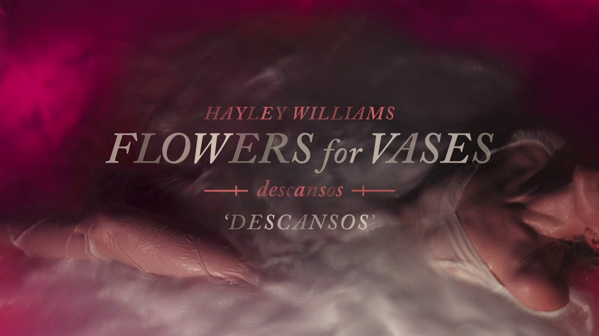

Su primer album como solista, lanzado en 2020
La salida de ese album fue anunciada a inicios de 2020 con el sencillo "Simmer"
Hayley Williams es una cantante y compositora estadounidense nacida el 27 de diciembre de 1988
Comenzando desde 2005 y hasta el presente, Hayley Williams forma parte de la banda "Paramore" como vocalista principal, teclista y compositora
Paramore ha, desde sus comienzos, publicado 6 álbumes
| Título | All We Know is Falling | Riot! | Brand New Eyes | Paramore | After Laughter | This is Why |
|---|---|---|---|---|---|---|
| Año | 2005 | 2007 | 2009 | 2013 | 2017 | 2023 |
| Sello | Fueled by Ramen | Atlantic Records | ||||
La salida de ese album fue anunciada a inicios de 2020 con el sencillo "Simmer"

El album marca el primer trabajo de la artista sin colaboración por parte de sus compañeros de la banda "Paramore"
El album fue anunciado originalmente con la salida del sencillo "Mirtazapine" lanzado como sorpresa en un programa de radio estadounidense
Más tarde, en la página web de la artista, 17 canciones aparecerían disponibles para su reproducción
Fueron estas, con la adición de tres nuevas, que serían luego recopiladas para el lanzamiento oficial del album en servicios de streaming
| Título | Reproducir | Duración |
|---|---|---|
| Ice in my OJ | 2:12 | |
| Glum | 3:11 | |
| Kill Me | 2:48 | |
| Whim | 3:36 | |
| Mirtazapine | 3:21 | |
| Dissapearing Man | 3:29 | |
| Love Me Different | 3:32 | |
| Brotherly Hate | 2:49 | |
| Negative Self Talk | 4:13 | |
| Ego Death At A Bachelorette Party | 3:19 | |
| Hard | 2:56 | |
| Discovery Channel | 3:18 | |
| True Believer | 3:49 | |
| Zissou | 2:56 | |
| Dream Girl in Shibuya | 4:22 | |
| Blood Bros | 2:48 | |
| I Won't Quit On You | 3:20 | |
| Parachute | 3:40 | |
| Good ol' Days | 3:24 | |
| Showbiz | 3:50 | |
| Duración Total | 66mins | |
Una vez culminado su contrato de 20 años con el sello "Atlantic Records", Hayley Williams funda su propio sello discográfico "Post Atlantic" con la colaboración de "Secretly Distribution"
Es bajo este que la cantante publica su tercer album en solitario Ego Death at a Bachelorette Party
Conocida por su estilo rebelde, Hayley Williams siempre fue marcada por sus cambios frecuentes de color de cabello
Entonces, es en 2016 que, junto a su estilista y amigo Brian O'Connor, lanza Good Dye Young. Una compañía de tinturas para el cabello con el propósito de ser menos nocivo además de ser vegano y libre de crueldad en su proceso